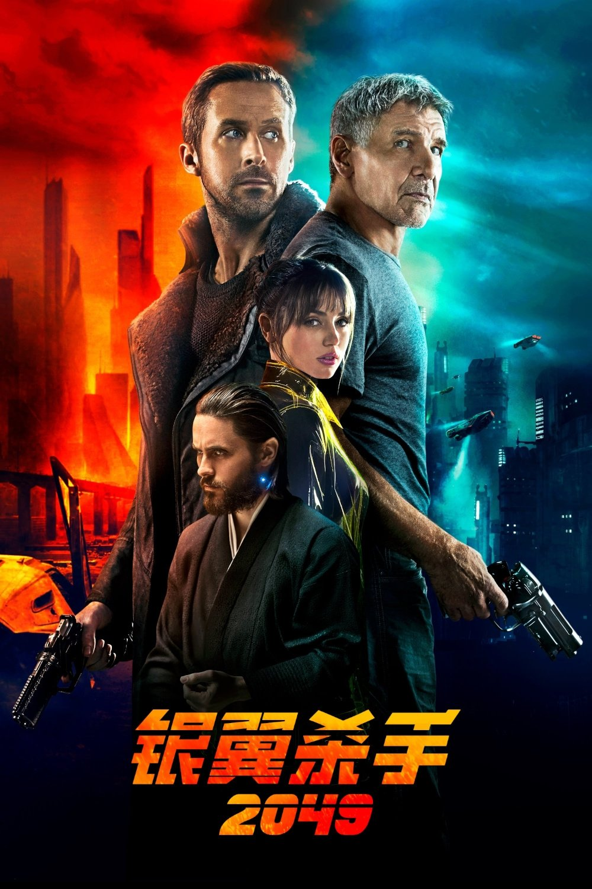
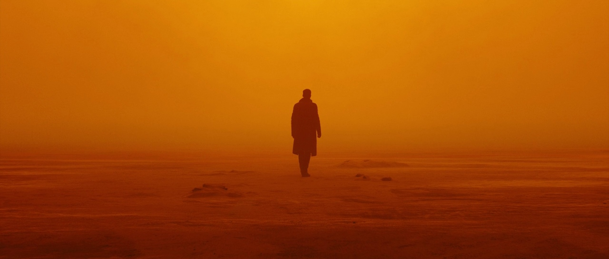
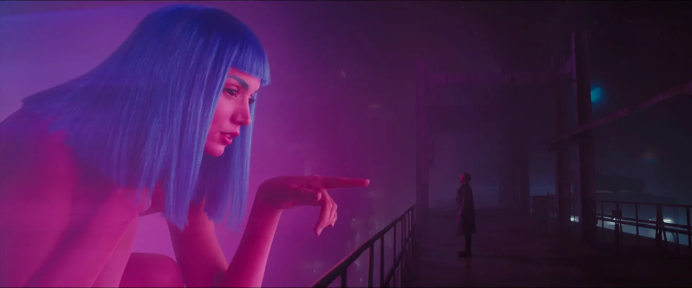
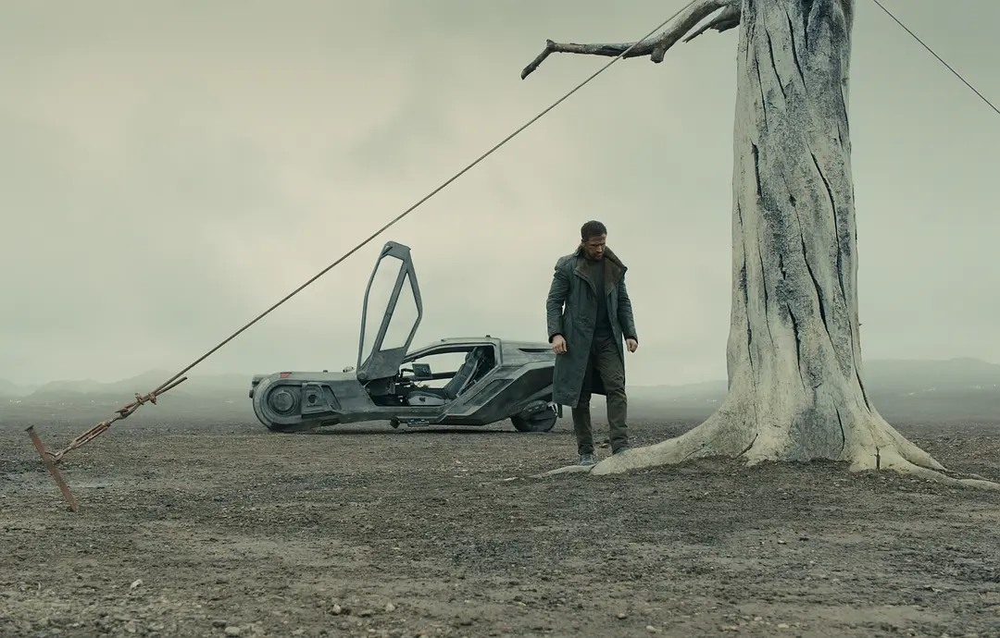
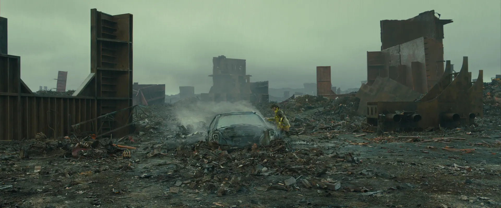
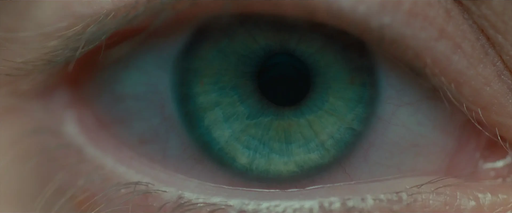
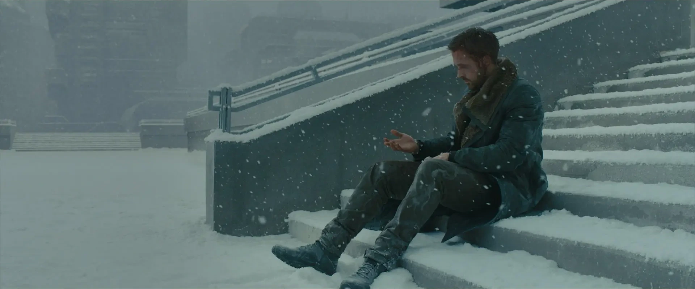

Blade Runner 2049
银翼杀手 2049

《银翼杀手2049》是 1982 年《银翼杀手》的续作。维伦纽瓦执导、罗杰·迪金斯掌镜、汉斯·季莫配乐， 拿下第 90 届奥斯卡最佳摄影与最佳视觉效果两项大奖。它继承了前作的人工智能反思与存在主义命题， 却用一套完全不同的视听语言，重建了一片赛博朋克废土。
橙黄
全片的通调是偏橙的暗黄。黄色是 2049 年地球末世的太阳与荒漠；更重要的是， 每一次黄色出现，都代表 K 获得新的信息：门廊的黄灯、树下的小黄花、Wallace 总部的阳光、 拉斯维加斯漫天的橙色迷雾。色彩在这里不只是气氛，它是叙事的线索。另一种反复出现的颜色是绿色： Sapper 的种植场、Joi 的界面、K 的绿色夹克、DNA 库，都标记着 Wallace 公司的产品身份； 唯有 Ana 博士造出那片翠绿森林，是真正的生命色。

割裂
迪金斯的光影关键词是“割裂”。Wallace 公司墙上流动的焦散水纹、忽明忽暗如水流转的光线， 以及大量逆光剪影——K 与 Sapper 对话时，一个隐于黑暗、一个暴露在光里，结局已经写在光里。 焦散的水纹在 Luv 脸上流动，暗示她既是奴隶又握有权力的割裂处境。 而玻璃罩内外的镜像，又把真实与虚幻的边界搅在一起。

辽阔
迪金斯偏爱广角与两极镜头：眼球的大特写剪到太阳能田的大远景，一眼一世界。 干净空旷的构图让角色在巨大的世界里格外孤独——K、Joi、Deckard，甚至 Wallace， 每个人都在孤独中追寻自己是谁。


眼睛
眼睛是全片的核心意象。判断复制人的型号要看眼球上的序列号；Luv 用死者的眼睛打开系统； Wallace 双目失明，却拥有无数只电子眼睛。集权者的眼睛用来窥视，反抗者的眼睛用来追寻。

雪
季莫用合成器与谢泼德音调制造持续上升的紧张，几乎没有完整旋律。直到结尾， K 躺在雪地里，前作的《Tears in the Rain》响起——“所有这些时刻，终将流失在时光中， 一如眼泪消失在雨中。”真实与虚拟早已模糊，肉体终将消亡，唯有灵魂能够永存——在橙色迷雾与斑驳光影里。
